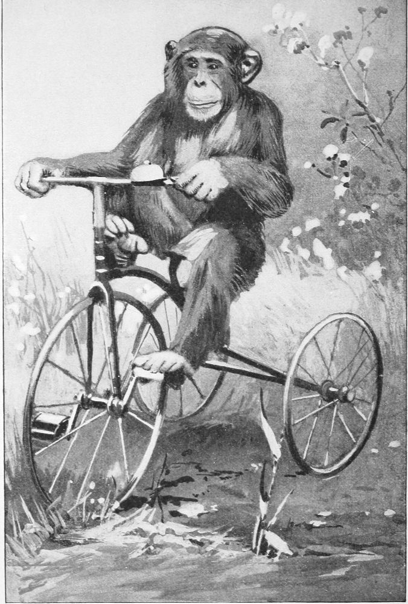

Other Chimpanzees—The Village Pet—A Chimpanzee as Diner-Out—Notable Specimens in Captivity
Among the number of chimpanzees that I have seen are some whose actions are worthy of record; but as many of them were the repetitions of similar acts of other specimens which are elsewhere described, I shall omit mention of them and relate only such other acts as may tend to widen the circle of our knowledge, and more fully illustrate the mental range of this interesting tribe of apes.
In passing through the country of the Esyira tribe I came to a small village, where I halted for a rest. On entering the open space between two rows of bamboo huts, I saw a group of native children at the opposite end of the space, and among them was a fine big chimpanzee, sharing in their play. When they discovered the presence of a white man in the town, they left their sport and came to inspect me. The ape also came, and he showed as much interest in the matter as any one else did. I was seated in a native chair in front of the king’s hut, and the people, as usual, stood around me at a respectful distance, looking on as if I had been some wild beast captured in the jungle.
The ape was aware that I was not a familiar kind of thing, and he appeared in doubt as to how he should act towards me. He sat down on the ground among the people and stared at me in surprise, from time to time glancing at those around him as if to ascertain what they thought of me. As they became satisfied with looking they retired one by one from the scene, until most of them had gone; but the ape remained. He changed his place a few times, but only to get a better view. The people were amused at his manner, but no one molested him.
Native Village, Interior of Nyanza
(From a Photograph.)
At length I spoke to him in his own language, using the sound which they use for calling one another. He looked as if he knew what it meant, but made no reply. I repeated the sound, and he rose up and stood on his feet, as if he intended to come to me. Again I uttered it, and he came a few feet closer, but shied to one side as if to flank my position and get behind me. He stopped again to look, and I repeated the word, in response to which he came up near my right side and began to examine my clothing. He plucked at my coat sleeve a few times, then at the leg of my trousers and at the top of my boot. He was getting rather familiar for a stranger; but I felt myself to blame for having given him the license to do so. For a while he continued his investigations, then he deliberately put his left hand on my right shoulder, his right foot on my knee, and climbed into my lap. He now began to examine my helmet, ears, nose, chin, and mouth. He became a little rough, and I tried to get him down out of my lap, but he was not disposed to go. Finally I told my boy—who acted as interpreter—to tell the native lads to come and take the ape away. This amused them very much, for they saw that I was bigger than the ape, and they thought I ought, therefore, to manage him myself. They complied, however; but his apeship declined to go until one of the men of the town interfered and compelled him to do so.
As he got down from my lap one of the boys bantered him to play. He accepted the challenge and ran after the lad until they reached the end of the open space between the houses, when the boy fell upon the ground, and the ape fell on him. They rolled and wallowed on the ground for a time. Then the ape released himself and ran away to the other end of the opening, the boy pursuing him. When they reached the end of the street they again fell upon each other, and another scuffle ensued. It was plain to be seen that the boy could run much faster than the ape, but the ape did not try to elude him. The other children crowded around them or followed them, looking on, laughing and shouting in the greatest glee. First one boy and then another took his turn in the play, but the ape did not lose interest in me. He stopped from time to time to take another survey, but did not try again to get upon my lap.
After a long time at this sport the ape quit playing and sat down by the wall of a house, with his back against it; the children tried in vain to induce him to resume; but he firmly declined, and sat there like a tired athlete, picking his teeth with a bamboo splinter which he had pulled off the side of the house. His conduct was so much like that of the children with whom he was playing that one could not have distinguished him from them except by his physique. He enjoyed the game as much as they did and showed that he knew how to gain or use an advantage over his adversary. In a scuffle he was stronger and more active than the boys, but in the race they were the more fleet. He screamed and yelled with delight, and in every way appeared to enter into the spirit of the fun.
This ape was about five years old, and his history, as it was given to me, showed that he had been captured, when quite young, in the forest near that place and ever since that time had lived in the village. He had been the constant playmate of the children, ate with them, and slept in the same houses with them. He was perfectly tame and harmless; he knew by name every one in the village, and knew his own name.
The king’s son—to whom he belonged—assured me that the ape could talk, and that he himself could understand what the animal said; but he declined to gratify my request to hear it. However, he called the ape by name, telling him to come, and the ape obeyed. The man then gave him a long-necked gourd and told him to go to the spring and bring some water. The animal hesitated, but after the command had been two or three times repeated he reluctantly obeyed. After a few minutes he returned with the gourd about half filled with water. In carrying the vessel he held it by the neck, but this deprived him of the use of one hand. He waddled along on his feet, using the other hand, but now and then he set the gourd on the ground, still holding to it, and using it something after the manner of a short stick. On delivering the gourd of water to his master, he gave evidence of knowing that he had done a clever thing.
I expressed a desire to see him fill the gourd at the spring. The water was then emptied out, and the gourd was again given to him. On this occasion we followed him to the place where he got the water. On arriving he leaned over the spring and pressed the gourd into the water, but the mouth of it was turned down so that the water could not flow into it. As he lifted the gourd out it turned to one side, and a small quantity flowed into it. He repeated the act a number of times and seemed to know how it ought to be done, although he was very awkward in trying to do it. Whenever the water in the mouth of the gourd bubbled, he dipped it back again and was evidently aware that it was not filled. Finally, raising the vessel, he turned and offered it to his master, who declined to relieve him of it. We turned to go back into the town, and the ape followed us with the gourd; but all the way along he continued to mutter a sound of complaint.
He was next sent into the edge of the forest to bring firewood. He had been gone only a few minutes when he returned with a small branch of dead wood which he had picked up from the ground. He was again sent, together with three or four children. When he returned on this occasion he had three sticks in his hand. The man explained to me that when the ape went alone he would never bring but one twig at a time, and this was sometimes not bigger than a lead pencil; but if the children went with him and brought wood, he would bring as much as he could grasp in one hand. He also told me that the animal would sit down on the ground and lay the sticks across one arm in the same manner as the children did, but he invariably dropped them when he rose up. Then he would seize what he could hold in one hand and bring it along. The man also said that, in carrying a single stick, the ape always used only the hand in which he held it; but that if he had three or four pieces he always curved his arm inwards, holding the wood against his side, and hobbled along with his feet and the other hand.
The next thing with which the man entertained me was sending the ape to call some one in the village. He first sent him to bring a certain one of the man’s wives. She was several doors away from where we sat. The ape went to one house, sat down at the door for a moment, looking inside, and then moved slowly along to the next, which he entered. Within a minute he appeared at the door, holding the cloth that the woman wore tied around her, and in this manner led her to his master. He was next sent to bring a certain boy. This he did in a similar manner, except that the boy had on no clothing of any kind, and the ape held him by the leg.
During all these feats the man talked to him, as far as I could tell, in the native language only; though he declared to me that some of the words that he had used were those of the ape’s own speech. However, he said that many words that the ape knew were of the native speech, and that the ape had no such words in his language. One thing that especially impressed me was a sound which I have elsewhere described as meaning “good” or “satisfaction,” which this man said was the word which these apes use to mean “mother.” My own servant had told me the same thing, but I am still of the opinion that they are mistaken in the meaning of the sound, although it is almost exactly the same as the word for mother in the native speech. The difference being in the vowel element only, it is possible, I grant, that the word may have both meanings. A little later one of the women came to the door of a house and said, in the native language, that something was ready to eat; whereupon the children and the ape at once started. In the mean time she set in front of the house an earthen pot, containing boiled plantains, from which all the children and the ape alike helped themselves. In brief, the ape was a part of the family and was so regarded by all in the town. I do not know to what extent those natives may have played upon my credulity, but so far as I could discern, their statements concerning the animal were verified.
I proposed to buy the ape, but the price asked was nearly twice that of a slave. I could have bought any child in the town at a smaller cost. I have never seen any other chimpanzee that I so much coveted. When standing in an upright position, he was quite four feet in height, strongly built and well proportioned. He was in a fine, healthy condition and in the very prime of his life. He was not handsome in the face, but his coat of hair was of good color and texture. He was of the common variety, but a fine specimen.
Mr. Otto Handmann, formerly the German consul at Gaboon, had a very fair specimen of this same species of chimpanzee. He was a rough, burly creature, but was well disposed and had in his face a look of wisdom that was almost comical. He had been for some months a captive in a native town, during which time he had become quite tame and docile. By nature he was not humorous, but he appeared to acquire a sense of fun as he grew older and became more familiar with the manners of men.
On my return from the interior I was invited by the consul to take breakfast with himself and a few friends; but owing to a prior engagement, I was not able to be present. It was proposed by some one of the guests that my vacant seat at the table should be filled by the chimpanzee. He was brought into the room and permitted to occupy the seat. He behaved himself with becoming gravity and was not abashed in the presence of so many guests. He was served with such things as were best suited to his liking, and his demeanor was such as to amuse all present. On the proposal of a toast all the guests beat with their hands upon the table, and in this the chimpanzee joined with apparent pleasure. After a few rounds of this kind, one of the guests occupying the seat next to the chimpanzee failed to respond with the usual beating; the chimpanzee observed the fact, turned upon the guest, and began to claw, scream, and pound him on the back and arm until the gentleman proceeded to beat; whereupon the ape resumed his place and joined in the applause. On this occasion he acquitted himself with credit; but an hour later he had fallen into disgrace by drinking beer until he was actually drunk, when he awkwardly climbed off the chair, crawled under the table, and went to sleep.
One of the clerks in the employ of the consul had a fair specimen of this species. It was a female, perhaps two years younger than the one just described, but equally addicted to the habit of drinking beer. It is the custom among people on the coast to offer to a guest something to drink, and on these occasions this young lady ape always expected to partake with the others. If she was overlooked in pouring out the beer, she always set up a complaint until she got her glass. If it was not given to her, she would go from one to another, holding out her hand and begging for a drink. If she failed to secure it, she watched her opportunity, and while the guest was not looking would stealthily reach up, take his glass off the table, drink the contents, and return the glass to its place. She would do this with each one in turn until she had taken the last glass; but if a glass was given to her at the same time that the others were served, she was content with it and made no attempt to steal that of another. In this act she evinced a skill and caution worthy of a confirmed thief; she would secrete herself under the table or behind a chair and watch her chance. She made no attempt to steal the glass while it was being watched, but the instant she discovered that she was not observed, or thought she was not, the theft was committed.
Her master frequently gave her a glass and a bottle of beer so that she might help herself. She could pour the beer with dexterity. She often spilt a portion of it and sometimes filled the glass to overflowing, but she always set the bottle right end up, lifted the glass with both hands, drained it, and refilled it as long as there was any in the bottle. She could also drink from the bottle and would resort to this method if no glass were given her. She knew an empty bottle from one that contained beer. I may remark here that I have known at least five or six chimpanzees that were fond of beer, and whenever they could get it would drink until they were drunk. I have never seen one, that I am aware of, that would drink spirits.
This ape was very much attached to her master, would follow him and cry after him like a child. She was affectionate to him; but she had been so much annoyed by strangers that her temper was spoiled, and she was irritable.
Arriving on the south side of Lake Izanga, I found a young chimpanzee at the house of a white trader. It was tied to a post in the yard, where it was annoyed by the natives who came to the place to trade. On approaching it for the first time, I spoke to it in its own language, using the word for food. It recognized the sound at once and responded to it. As I came nearer, it advanced as far towards me as the string with which it was tied would allow. Standing erect and holding out its hands, it repeated the sound two or three times. I gave it some dried fish. This it ate with relish, and we at once became friends. Its master permitted me to release it on the condition that I should not allow it to escape. I untied the cord and took the little captive in my arms. It put its arms around my neck as if I had been the only friend it had on earth. It clung to me and would not consent for me to leave it. I could but pity the poor, neglected creature. There it was, tied in the hot sun, hungry, lonely, and exposed to the tortures of every heartless native that chose to tease it. When it was not in my arms it followed me around and would not leave me for a moment. Its master cared but little for it and left it to the charge of his boy, who, like all other natives, had no thought or concern for the comfort of any creature but himself. I tried to purchase it, but the price was too much, and after two days our friendship was broken forever. But I was glad to learn soon after this that another of the traders had secretly released it and let it escape into the forest. The man who did this told me that he did it as an act of mercy. I often recall this little prisoner to mind, and always feel a sense of gladness at knowing that he was set at liberty by a humane friend. Whatever may have been his fate in the forest, it could have been no worse than to be confined, starved, and tormented, as he was while in captivity.
Another small specimen which I saw at Gaboon was not of much interest except from one fact, and that was it was broken out with an eruptive disease prevalent among the natives. This disease is called craw-craw, or kra-kra. It is said to originate from the water, either by external or internal use of that fluid. This animal was infected in the same way and on the same parts of the body as men are affected by the same disease, and is another instance of apes being subject to the same maladies as those of man. The specimen itself also exemplified the difference in intellect among these animals, for this one had in its face a look of mental weakness, and every act confirmed the fact. It was silent, inactive, and obtuse.
During my residence in the cage I saw fewer chimpanzees than gorillas; but from those I did see it was an easy matter to determine that they are much less shy and timid than the gorillas.
On one occasion I heard a chimpanzee in the bush not far away from the cage. I called him with the usual sound. He answered, but did not come to the cage. It is probable that he could see it and was afraid of it. I tried to induce Moses to call him, and he did once utter the sound; but he appeared to regret having made the attempt. I called again and the stranger answered, and from the manner in which Moses behaved it was evident that the call had been understood. Moses would not attempt the call again, but clung to my neck with his face buried under my chin. It was probably jealousy that caused him to refuse, because he did not want the other to share my attentions. I gave the food sound, but I could not induce the visitor to come nearer. I failed to get a view of him so as to tell how large he was, but from his voice I judged that he must have been about full-grown. Whether he was quite alone or not I was not able to tell; but only the one voice could be heard.
Another time while I was sitting quite alone, a young chimpanzee, perhaps five or six years old, appeared at the edge of a small opening of the bush. He plucked a bud or leaf from a small plant. He raised it to his nose and smelt it. He picked three or four buds of different kinds, one or two of which he put in his mouth. He turned aside the dead leaves that were lying on the ground, as if he expected to find something under them. I spoke to him, using the call sound; he instantly turned his eyes towards me, but made no reply. I uttered the food sound, and he replied but did not move. He betrayed no sign of fear and but little of surprise. He surveyed the cage and myself. I repeated the sound two or three times. He refused to approach any nearer. He turned his head from side to side for a moment, as if in doubt which way to go; then he turned aside and disappeared in the bush. He did not run or start away as if in great fear, but by the sound of the shaking bushes it could be told that he increased his speed after he had once disappeared from view.
One day I had been for a stroll with Moses and the boy. As we returned to the cage we saw a chimpanzee about half grown; he was crossing a rugged little path about thirty yards away from us. He paused for a moment to look at us, and we stopped. I tried to induce Moses to call out to him, but he declined to do so. As the stranger turned aside I called to him myself, but he neither stopped nor answered. This one appeared to be quite brown, but the boy assured me the hair was jet black, and that the light skin gave the appearance of brown color. To satisfy myself, I had Moses placed in the same attitude and position, and, looking at him from the same distance, I became convinced that the boy was right.
One morning, having started with Moses for a walk, we had gone only some forty yards away from the cage when he made a sound of warning. I instantly looked up and saw a large chimpanzee standing in the bush not more than twenty yards away. I paused to observe him. He stood for a moment, looking straight at us. I spoke to him, but he made no reply; he moved off in a line almost parallel to the little path we were in, and I returned towards the cage. He did not come any nearer to us, but kept his course almost parallel with ours. From time to time he turned his head to look, but gave no sign of attack. I called to him several times, but he made no answer. When I had reached a place in front of the cage I called again, and after the lapse of a few seconds he stopped. By this time he was concealed from view. He halted only for a moment, changed his course, and resumed his journey. This was the largest chimpanzee I saw in the forest. Once, while sitting in the cage, I heard the sound of something making its way through the bush not more than twenty yards away; presently a chimpanzee came into view. As it crossed the path near by, I called three or four times, but it neither stopped nor answered. As well as I could tell, it appeared to be a female and quite grown.
I may take occasion to remark that, while the chimpanzee is mostly found in large family groups,—as I have reason to believe, from native accounts of them and from what has been told me by white men,—I have never been able to see a family of them together. Each of these that I have mentioned, so far as I could tell, was quite alone. Whether or not the others were scattered through the forest in like manner, hunting for food, and all came together after this, I cannot say.
Another thing worthy of mention is the fact that both these apes, the chimpanzee and the gorilla, live in the same forest, and twice on the same day I have seen both kinds. This is contrary to the common idea that they do not inhabit the same jungle. It appears that where there is a great number of the one kind there are but a few of the other. The natives say that in combat between the chimpanzee and the gorilla the former is always victor, and on this account the gorilla fears the chimpanzee. I believe this to be true, because the chimpanzee, although not so strong as the gorilla, is more active and more intelligent.
The chimpanzee will not approach or attack man if he can avoid him, but he does not shrink from him as the gorilla does. One instance that will illustrate this phase of his character I shall relate. On one occasion recently, while I was on the coast, a native boy started across a small plain near the trading station. With him was a dog that belonged to the white trader of the place. The dog was in advance of the boy, and as the latter emerged from a small clump of the bush he heard the dog bark in a playful manner, and discovered him not more than thirty yards away, prancing, jumping, and barking in a jolly way with a chimpanzee which appeared to be five or six years old. The ape was standing in the path along which the boy was proceeding. He was slapping at the dog with his hands and did not seem to relish the sport; yet he was not resenting it in anger. The dog thought the ape was playing with him, and he was taking the whole thing in fun. The boy looked at them for a few moments and retreated. As soon as he disappeared the dog desisted and followed him to the house. The boy was afraid of the ape and made no attempt to capture him. The ape was taken by surprise by the dog and the boy, and thus had no time to escape. He did not strike to harm the dog, but only to ward him off. The dog made no attempt to bite the ape, but would jump up against him and knock him out of balance, and this annoyed him. The ape didn’t seem to understand just what the dog meant.
I shall not describe those apes that have been kept in captivity and are well known; but I will mention some of them. The largest specimen of the chimpanzee that I have ever seen was Chico, who belonged to Mr. James A. Bailey of New York. He was as large perhaps as these apes ever become, although he was less than ten years old when he died.
Perhaps the most valuable specimen for scientific use that has ever been in captivity is Johanna, who belongs to the same gentleman. The history that is given of her, however, is hardly to be taken in full faith. Her age cannot be determined with certainty, but it is said that she is about thirteen years old. I have reason to doubt that, although I cannot positively deny it. Whatever may be her exact age, it is certain that she has now reached a complete adult state. She has grown to be quite as large as Chico was at the time of his death. She is not of amiable temper, but is much less vicious than he was. She has some of the marks of a kulu-kamba.
In order to justify my doubts upon the subject of Johanna’s age, I may state that Chico was hardly ten years of age when he died, but he had reached the adult period; and as males of any genus of the primates do not reach that state sooner than the females, it is not probable, since he was mature at ten, that she was not so until twelve. In the next place, her captors claim to have seen her within a few hours after her birth, and state that they watched her and her mother from time to time until she was one year old. Then they killed the mother and captured the babe. The claim is absurd. These apes are nomadic in habit and are rarely ever seen twice in the same place. They claim that she was born on January 19, but, from what I know of these apes, I conclude that is not their season of bearing. I doubt if any of them were ever born during that month. Again, it is claimed that she was captured by Portuguese explorers in the Congo, but the Portuguese do not possess along that river any territory in which these apes are ever found. They claim the territory around Kabinda, which would indicate that she came from the Loango valley instead of the Congo; but the cupidity of the average Portuguese would never allow anything to go at liberty for a year if it could be sold before that time.
Johanna is accredited with a great deal of intelligence, but I do not regard her as being above the average of her race. Since the death of her companion, Chico, she has received the sole attention of her keeper, and since that time has been taught a few things which are neither marvelous nor difficult. In point of intellect she cannot be regarded as an extraordinary specimen of her tribe. I do not mean to detract from her reputation, but I have failed to discover in her any high order of mental qualities.
The reason why Johanna may be regarded as the most valuable specimen for study is the fact that she is the only female of her race that has ever, in captivity, reached the state of puberty. She has done so, and this fact enables us to determine certain things which have never heretofore been known. This affords the zoologists an opportunity for the study of her sexual developments which may not again present itself in many years to come. From this important point of view she presents the student with many new problems in that branch of science. I have elsewhere stated my opinion that the female chimpanzee reaches the age of puberty at seven to nine years, and I have many reasons which I will not here recount that cause me to adhere to that belief. But the uncertainty of the age of this ape does not destroy her value as a subject of scientific study.
The most sagacious specimen of the race that I have been brought in contact with is Consul II, who is now an inmate of the Bellevue Garden in Manchester, England. He has not been educated to perform mere tricks to gratify the visitor, in the way that animals are usually trained, but most of the feats that he performs are prompted by his own desire and for his own pleasure. There is a vast difference in the motives that prompt animals in the execution of these feats. I have elsewhere mentioned the fact that animals that are caused to act from fear do so mechanically, and the acts are not a true index to their intellect. While Consul and a few other apes that I have seen do many things by imitation, they do not do them by coercion. They seem to understand the purpose and foresee the result, and these impel them to act.
Some of the feats performed by this ape I have never seen attempted by any other. One accomplishment is the riding of a tricycle. He knows the machine by the name of “bike,” although it is not really a bicycle. He can adjust it and mount it with the skill of an acrobat. The ease and grace with which he rides are sufficient to provoke the envy of any boy in England. He propels it with great skill and steers it with the accuracy of an expert. He guides it around angles and obstacles with absolute precision. He is allowed to go at liberty a great deal of his time; and this is the proper way to treat these apes in captivity. He rides the wheel for his own diversion. He does not do it to gratify strangers or to “show off.”

CONSUL II RIDING A TRICYCLE
(From a Photograph.)
Another accomplishment which Consul has is that of smoking a pipe, a cigar, or a cigarette. This may not be commended from a moral standpoint, but it appears to afford him quite as much pleasure as it does the average boy when he first acquires the habit. He has also formed the habit of spitting as he smokes,—but he has the good manners not to spit on the floor. When Consul has his pipe lighted he usually sits on the floor to enjoy a smoke, and he spreads down before him a sheet of paper to spit on. When he has finished smoking he rolls up the paper and throws it into some corner, out of the way. When playing about the grounds he often finds a cigar stub. He knows what it is, picks it up, puts it into his mouth, and at once goes to his keeper for a light. He will not attempt to light his pipe or cigar, because he is afraid of burning his fingers; but he will light a match and hand it to his keeper to hold while lighting the pipe. He sometimes takes a piece of paper, lights it in the fire, and hands it to some one else to light his pipe for him. He is afraid of the fire and will not hold the paper while it is burning. If any one hesitates to take it, he throws it at him and then gets out of the way. He is not fond of cigarettes, because he gets the tobacco in his mouth, and he does not like the taste of it.
When Consul is furnished with a piece of chalk he begins to draw some huge figure on the wall or the floor. He never attempts to make a small design with chalk, but if given a pencil and paper, he executes some peculiar figure of smaller design. Those made with the chalk or the pencil are usually round or oval in shape, but if given a pen and ink, he at once begins to make a series of small figures containing many acute angles. Whether these results are from design or accident I cannot say, but he appears to have a well-defined idea as to the use of the instrument. Whether he can distinguish between writing and drawing I am unable to say.
The only abstract thing that his keeper has tried to teach him is to select from the letters of the alphabet. He has learned to distinguish the first three. These are made upon the faces of cubical blocks of wood; each block contains one letter on each of its faces. He selects with very few mistakes the letter asked for, and errors appear to result from indifference rather than from ignorance.
Consul is very fond of play, and he makes friends with some strangers on sight, but to others he takes an aversion without any apparent cause; and, while he is not disposed to be vicious when not annoyed, he resents with anger the approaches of certain persons. He is the only ape I have seen that can use a knife and fork with very much skill; but he cuts up his food with almost as much ease as a boy of the same age would do, and he uses his fork in eating. He has been taught to do this, until he rarely uses his fingers in the act. He is fond of coffee and beer, but does not care for spirits.
There is nothing that so much delights Consul as to get into the large cage of monkeys and baboons kept in the garden. Most of them are afraid of him. But one large Guinea baboon is not so, and on every occasion he shows his dislike for the ape. The latter takes many chances in teasing him, but always manages to evade his attack. He displays much skill and a great degree of caution in playing these pranks upon the baboon when at close range. Upon the approach of the ape the other animals in the cage all seek some refuge, and he finds great diversion in stealing up to their place of concealment to frighten them. Consul is very strong and can lift objects of surprising weight. It is awkward for him to stand in an upright position, but he does so with more ease than any other chimpanzee that I have ever seen. If any one will take hold of his hand, he will stroll for a long time and without apparent fatigue.
Owing to the sudden changes of temperature in that part of England where he is kept, he is provided with a coat and is often required to wear it when going out of doors. He does not like to be hampered with such a garment, and if for a moment he is not watched, he removes it and sometimes hides it to keep from wearing it. He is also provided with trousers; these he dislikes more if possible than his coat, but, above all other articles of wearing apparel, he dislikes shoes. His keeper often puts them on him, but whenever he gets out of sight he unties and removes them. He cannot tie the laces, but can untie them in an instant. He does not evince so much aversion to a hat or a cap and will sometimes put one on without being told; but he has a perfect mania for a silk hat and, if allowed to do so, he would demolish that of every stranger who comes to the garden. He has a decided vein of humor and a love of approbation. When he does anything that is funny or clever, he is perfectly aware of the fact; and when by any act he evokes a laugh from any one, he is happy and recognizes the approval by a broad chimpanzee grin.
In the corner of the monkey house is a room set apart for the keeper, and in this room supplies of food for the inmates are kept. In a small cupboard in one corner is kept a supply of bananas and other fruits. Consul knows this and has tried many times to burglarize it. On one occasion he secured a large screw-driver and attempted to prise open the door. He found the resistance to be greatest at the place where the door locked, and at this point he forced the instrument in the crevice and broke off a piece of the wood, about an inch wide, from the edge of the door. At this juncture he was discovered and reproved for his conduct; but he never fails to stick his fingers in this crack and try to open the door. He has not been able to unlock it when the key is given him, although he knows the use of the key and has often tried it; but his keeper has never imparted the secret to him, and his method of using the key has been to prise with it or pull it, instead of turning it after putting it in the keyhole.
The young keeper, Mr. Webb, deserves great credit for his untiring attention to this valuable young ape, and the results of his zeal are worthy of the recognition of every man who is interested in the study of animals.
Another specimen that may be regarded as an intermediate type was recently kept in Bellevue Gardens at Manchester. He was playful and full of mischief. He had been taught to use a stick or broom in fight, and with such a weapon in his hand he would run all over the building, hunting some one to attack. He did not appear to be serious in his assault, but treated it as fun. It is a bad thing to teach to apes, because they grow pugnacious as they grow older, and all animals kept closely confined acquire a bad temper.
MR. CROWLEY, LATE OF THE NEW YORK ZOÖLOGICAL GARDEN
(Taken from Life.)
In an adjoining cage was kept a young orang, and the two ate at the same table. The chimpanzee appeared to entertain a species of contempt for the orang. The keeper had taught him to pass the bread to his neighbor, but he obeyed with such reluctance that his manner betrayed more disgust than kindness. A few small pieces of bread were placed on a tin plate, and the kulu was required to lift the plate in his hand and offer it to the orang before he himself was allowed to eat. He would lift the plate a few inches above the table and hold it before the orang’s face; when the latter had taken a piece of the bread, the chimpanzee withdrew the plate, held it for a moment, and dropped it. Meanwhile he kept his eyes fixed on the orang. The manner in which he dropped the plate looked as if he did so in contempt. When the meal was finished, the kulu would drink his milk from a cup, wipe his mouth with the serviette, and then get down from the table. The orang would slowly climb down and go back to his cage. We shall not describe the details of their home life, but they were two jolly young bachelors, one of which was as stupid as the other was bright.
The specimens that were kept in the Gardens in New York were very fine. One of them was mentally equal to any other specimen hitherto in captivity. There were two kept in the Cincinnati Gardens which were also very fine. So far as I am aware, there have never been but nine of these apes brought to America; but six of these lived longer, and four of them grew to be larger, than any other specimens of this race have ever done in captivity. For some reason they never survive long in England or other parts of Europe. This is probably due to some condition of the atmosphere. It cannot be from a difference of treatment.
I have seen a large number of chimpanzees; most of them were in captivity; yet I have seen enough of them in a wild state to gain some idea of their habits and manner. Those described will be sufficient to show the mental character of the genus.